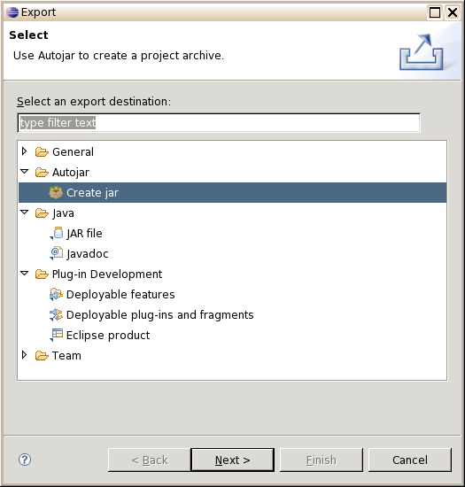

| Bedienung
- Klicken Sie im Package-Explorer mit der echten Maustaste
auf ein Projekt und wählen Sie den Menüpunkt "Export". Im auftauchenden
Export-Wizard markieren Sie "Autojar / Create jar" und klicken unten
auf "Next".

- Im folgenden Fenster lassen sich einige
Optionen einstellen.

Oben wird der Umfang der Protokollierung eingestellt, entsprechend den
Optionen -q, -v und -D der Kommandozeilenversion (siehe Optionen).
Darunter folgen Checkboxen, mit denen sich die Behandlung von
Reflection festlegen lässt, entsprechend den Optionen -d und -a (siehe Reflection).
Die unterste Checkbox erlaubt es, Dateien aus
Extension-Verzeichnissen mit in das Archiv zu übernehmen (Option -e).
Im ersten Eingabefeld wird der Name der Ausgabedatei angegeben
(vorbesetzt mit PROJEKT.jar). Diese Angabe ist Pflicht.
Danach kann eine
Manifest-Datei angegeben werden und schließlich eine Textdatei, die eine
Liste von zu suchenden Kassennamen enthält (einen pro Zeile). Die Angabe
ist nicht unbedingt nötig, da Klassen auch direkt über den Wizard
eingegeben werden können (s.u.), ermöglicht es aber, längere Klassenlisten
unabhängig von Eclipse vorzubereiten.
- Im nächsten Fenster ("Additional Autojar classes") können Sie
interaktiv Namen von Klassen festlegen, die gesucht und übernommen
werden sollen. Neue Namen werden in das rechte Eingabefeld eingegeben
und mit "add" in die Liste links übernommen. Listeneinträge können
durch Markieren und Klicken auf "remove" wieder entfernt werden.
- Das folgende Fenster ("Additional resources") erlaubt es, beliebige
Dateien und Verzeichnisse im Workspace zu markieren, die in das Archiv
übernommen werden sollen. Sie werden dort unter relativen Pfadnamen abgelegt,
bezogen auf den Workspace.
- Wenn alle notwendigen Eingaben gemacht wurden, kann nun mit einem
Klick auf "Finish" der Vorgang gestartet werden. Voraussetzung ist,
dass die Ausgabedatei und mindestens eine Ausgangsklasse festgelegt wurden.
Falls eine Manifest-Datei angegeben wurde, die einen "Main-Class"-Eintrag
enthält, wird die dort angegebene Klasse als Ausgangsklasse genommen.
- Beim nächsten Start des Plugins kann, wenn keine Parameter zu ändern sind, sofort auf "Finish"
geklickt werden.
|
 SourceForge Projektseite
SourceForge Projektseite
 Startseite
Startseite